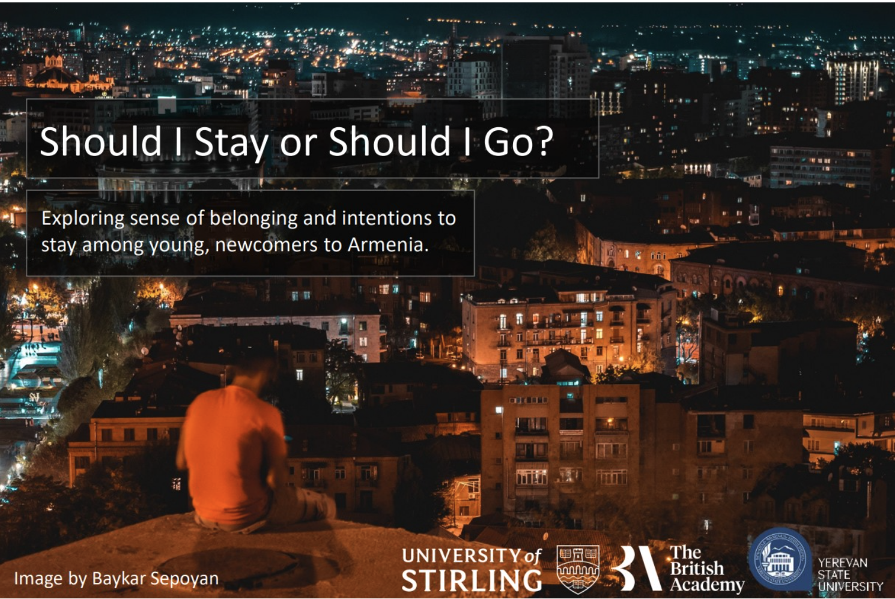
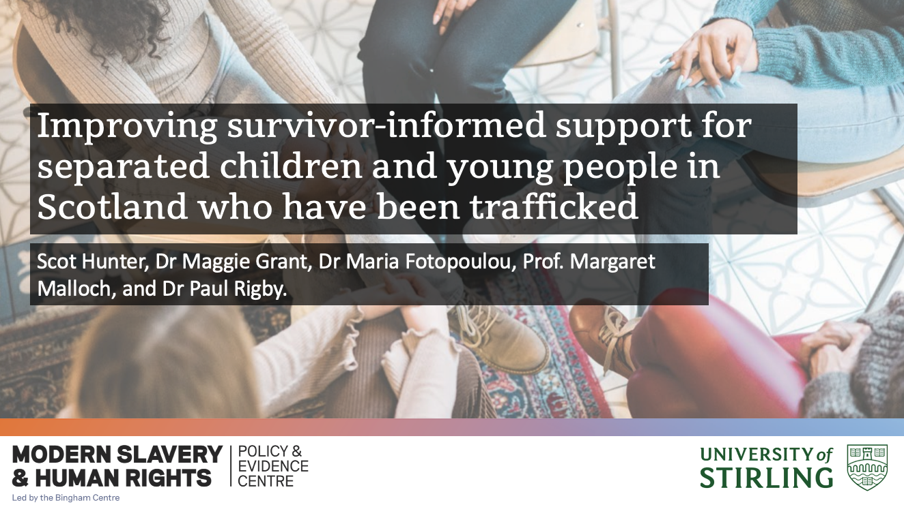
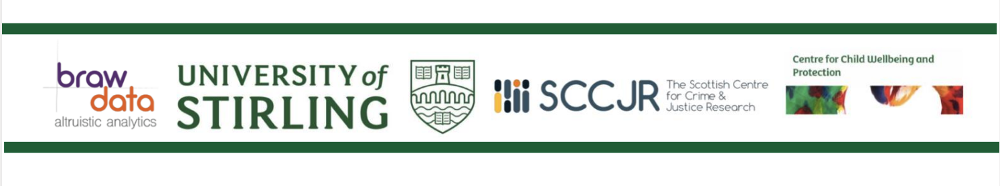
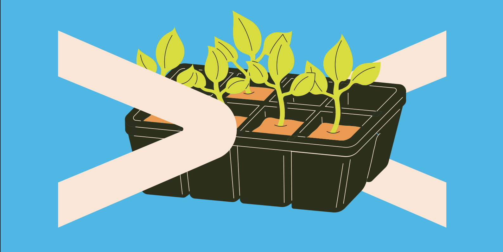

‘Should I Stay or Should I Go?’ Belonging and Intentions to Stay Among Young Newcomers to Armenia
 Image by Baykar Sepoyan.
Funders: British Academy (TGC/200273) (2021-23) | £48,444.09 w/ Dr. Sarah Wilson (PI), Prof. Marina Shapira, Dr. Maria Fotopoulou, & Dr Sossie Kasbarian.
Scot has been a Research Fellow on the British Academy funded project ‘Should I Stay Or Should I Go? Sense of beloning and intentions to stay amoung young, newcomers to Armenia’. Scot was responsible for the analysis of primary data collected through different surveys and conducted interviews and focus groups with local Armenians, Syrian refugees, and key stakeholders during fieldwork in Yerevan, Armenia. During this fieldwork, Scot offered a lecture on using Big Data in social research to colleagues and students at Yerevan State University. He also participated in a round table panel about people on the move with other migration scholars.
Improving Survivor-Informed Support for seperated children and young people in Scotland who have been trafficked.
 Image property of Modern Slavery and Human Rights PEC.
Funders: AHRC through Modern Slavery Policy and Evidence Centre | £270,00. w/ Dr. Maggie Grant (PI), Prof. Margaret Malloch, Dr. Paul Rigby, Dr. Maria Fotopoulou, and Dr. Kieran Taylor.
As a Research Assistant, Scot has contributed to the statistical analysis of Gaurdianship Scotland administrative data for a project on improving survivor improved support for children and young people who have experienced trafficking in Scotland. Himself and Dr Maggie Grant presented findings from the project at Eurocrim 2023 conference in Florence.
Evaluation of the Scottish Refugee Council’s Family Rights Service Pilot.

Funders: Scottish Refugee Council. w/ Dr. Ashley Rogers (PI), Dr Diarmuid McDonnel, & Dr. Paul Rigby.
Scot is currently a part of a team undertaking an evaluation of the Scottish Refugee Council’s new Family Rights Service, in which he has conducted interviews and focus groups with key stakeholders and refugee families using the service.
Social Researcher (intern) | The Scottish Government.
 Illustration by Sarah Cliff, from Phipps et al. (2023) The New Scots Refugee Integration Strategy: A report on the local and international dimensions of integrating refugees in Scotland
This multi-organisation internship involved working on a number of projects across both the Scottish Government’s Connected Communities Division and the Local Government and Analytical Services in collaboration with COSLA, Scottish Refugee Council, and researchers from Univ. of Glasgow. Scot’s role was to support colleagues from each organisation on the AMIF funded New Scots Strategy for the Integration of Refugee and Asylum Seekers project. Responsibilities include the analysis of grant application and monitoring data, providing support to funded organizations with monitoring and evaluation, and conducting a scoping literature review of refugee and asylum seeker integration policy.
Scot has maintained his interest in researching refuge integration. In collaboration with Dr. Fisher, Prof. Phipps (Univ. Glasgow), and Savan Qadir (Refugees for Justice), Scot has contributed to various publications and been lead author on two chapters in a forthcoming edited collection on refugee integration.